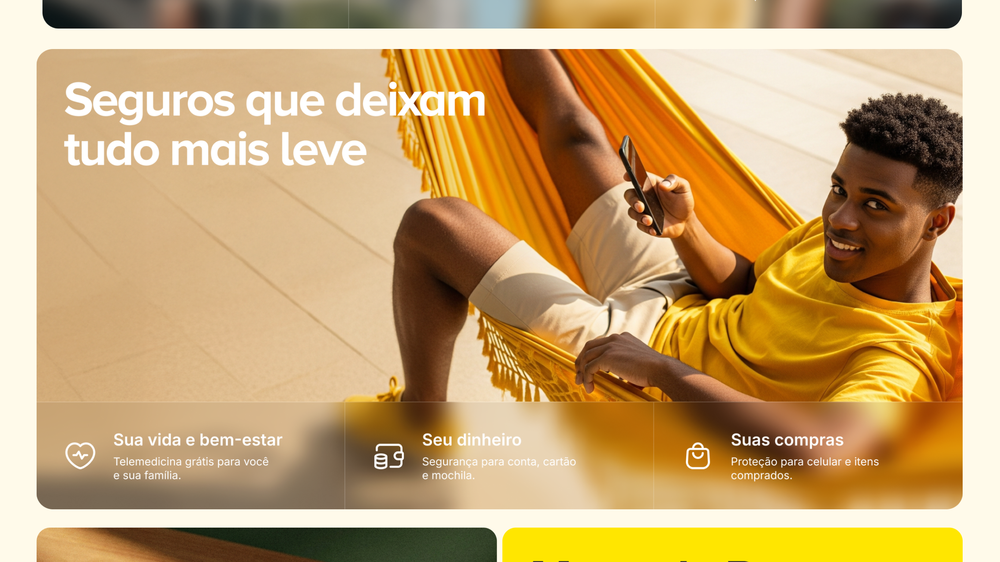
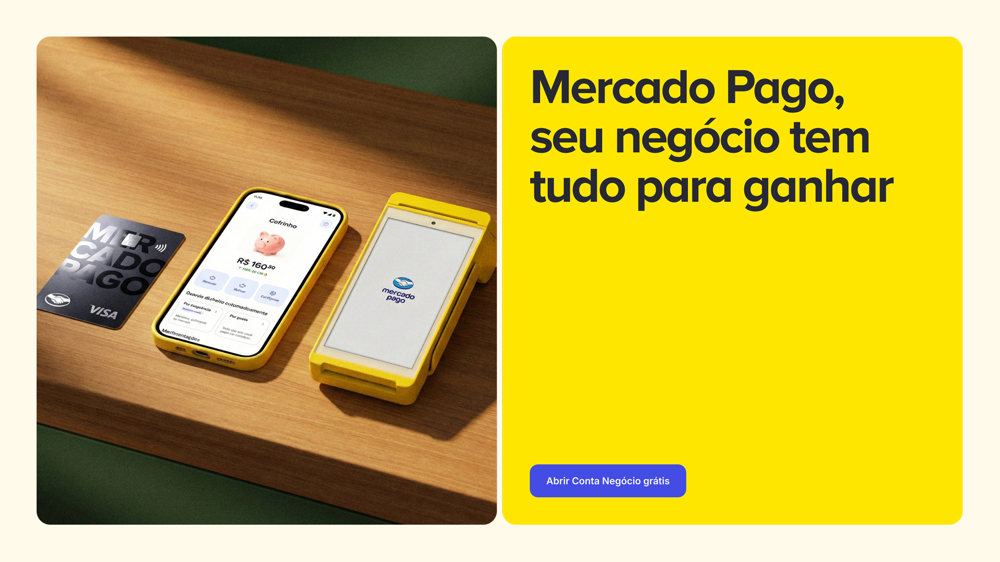

MPCraft · Acesso restrito MPCraft · Acceso restringido
Digite a senha para continuar. Ingresá la contraseña para continuar.
Senha incorreta. Contraseña incorrecta.
MPCraft · Acesso restrito MPCraft · Acceso restringido
Digite a senha para continuar. Ingresá la contraseña para continuar.
Senha incorreta. Contraseña incorrecta.
Direção de arte com fundamentação racional. IA como meio, não como fim. Dirección de arte con fundamentación racional. IA como medio, no como fin.



O problema não é falta de ferramenta: é falta de critério antes de usar a ferramenta. Times geram imagem com IA sem saber o que a imagem precisa comunicar. O AIAD resolve isso: toda decisão visual parte de intenção documentada. O que muda? O resultado é defensável, replicável e não depende de quem criou. El problema no es falta de herramienta: es falta de criterio antes de usarla. Los equipos generan imagen con IA sin saber qué necesita comunicar. El AIAD resuelve esto: toda decisión visual parte de intención documentada. ¿Qué cambia? El resultado es defendible, replicable y no depende de quién lo creó.
Cada imagem desse mapa foi escolhida por um princípio visual: não por estética. Amarelo como âncora de identidade. Produto com toque humano, nunca em flat isolado. Expressão natural: a pessoa parece de verdade, não parece modelo. Isso virou o filtro para cada decisão depois. Cada imagen de este mapa fue elegida por un principio visual: no por estética. Amarillo como ancla de identidad. Producto con toque humano, nunca en flat aislado. Expresión natural: la persona parece real, no parece modelo. Eso se volvió el filtro para cada decisión posterior.
Cor: amarelo como sistema, não como detalhe: ancora a marca sem precisar de logo. Color: amarillo como sistema, no como detalle: ancla la marca sin necesidad de logo.
Produto: sempre com presença humana: a mão, o olhar, o contexto de uso. Producto: siempre con presencia humana: la mano, la mirada, el contexto de uso.
Enquadramento: diversidade de composição: close, plano aberto, ângulo: sem monotonia. Encuadre: diversidad de composición: close, plano abierto, ángulo: sin monotonía.
Mesmo cenário, mesma pessoa, mesma luz. O que muda é o que cada frame comunica. Sem critério explícito, a escolha vira preferência pessoal. Com critério, a escolha vira decisão: e qualquer pessoa do time chega no mesmo resultado. Mismo escenario, misma persona, misma luz. Lo que cambia es lo que cada frame comunica. Sin criterio explícito, la elección se vuelve preferencia personal. Con criterio, la elección se vuelve decisión: y cualquier persona del equipo llega al mismo resultado.
O que elimina: frames onde o cartão fica ilegível, expressão encenada ou horizonte desbalanceado. Lo que elimina: frames donde la tarjeta queda ilegible, expresión actuada u horizonte desbalanceado.
O que seleciona: expressão natural + cartão com leitura clara + luz dourada sem queimar o rosto. Lo que selecciona: expresión natural + tarjeta con lectura clara + luz dorada sin quemar el rostro.
O ganho: a decisão pode ser explicada em uma frase: e documentada para o próximo projeto. La ganancia: la decisión puede explicarse en una frase: y documentarse para el próximo proyecto.
Aqui o briefing pediu produto como protagonista absoluto: sem contexto humano competindo. A decisão foi: céu limpo como fundo, cartão no centro óptico, mão como ancoragem mínima. Nenhum elemento decorativo. A imagem funciona porque o critério estava claro antes do clique. Aquí el brief pedía producto como protagonista absoluto: sin contexto humano compitiendo. La decisión fue: cielo limpio como fondo, tarjeta en el centro óptico, mano como anclaje mínimo. Ningún elemento decorativo. La imagen funciona porque el criterio estaba claro antes del clic.
Fundo: azul uniforme elimina distração: o olho vai direto ao produto. Fondo: azul uniforme elimina distracción: el ojo va directo al producto.
Posição: cartão elevado e centralizado: leitura imediata do nome da marca. Posición: tarjeta elevada y centrada: lectura inmediata del nombre de la marca.
Tensão: pulseira amarela na mão mantém a cor de identidade sem disputar o foco. Tensión: pulsera amarilla en la mano mantiene el color de identidad sin disputar el foco.
Dois cenários opostos: interior aconchegante e exterior urbano: mas o mesmo critério: naturalidade como requisito, não como estética. A pessoa não está posando com o produto. Está usando o produto. Essa distinção é o que separa imagem de campanha de foto de catálogo. Dos escenarios opuestos: interior acogedor y exterior urbano: pero el mismo criterio: naturalidad como requisito, no como estética. La persona no está posando con el producto. Está usando el producto. Esa distinción es lo que separa imagen de campaña de foto de catálogo.
Interior: luz quente, posição relaxada, produto como extensão do momento: não como motivo dele. Interior: luz cálida, posición relajada, producto como extensión del momento: no como motivo.
Exterior: plano aberto, postura natural, produto visível sem destaque forçado. Exterior: plano abierto, postura natural, producto visible sin destaque forzado.
As peças finais não são o começo do processo: são a consequência dele. A cor, o recorte, a hierarquia tipográfica: tudo tem racional que remonta ao briefing. O resultado é uma entrega que qualquer pessoa do time consegue defender: não só quem criou. Las piezas finales no son el inicio del proceso: son su consecuencia. El color, el recorte, la jerarquía tipográfica: todo tiene racional que remonta al brief. El resultado es una entrega que cualquier persona del equipo puede defender: no solo quien la creó.
Cada categoria não é apenas um tema: é um território emocional com parâmetros criativos definidos. Mood, palette, cenas e recursos visuais variam de acordo com o que cada categoria precisa comunicar. O olhar crítico sobre as imagens evoluiu — agora perguntamos não só se a imagem funciona, mas se ela pertence à categoria certa e usa os recursos certos para isso. Cada categoría no es solo un tema: es un territorio emocional con parámetros creativos definidos. Mood, paleta, escenas y recursos visuales varían según lo que cada categoría necesita comunicar. La mirada crítica sobre las imágenes evolucionó — ahora preguntamos no solo si la imagen funciona, sino si pertenece a la categoría correcta y usa los recursos correctos para eso.
Pagás, cobrás e operás sem fricção, no momento que precisás. O visual precisa transmitir energia e movimento — dinâmico, próximo, imperfeito. A paleta permite licenças e acentos de cor. Pagás, cobrás y operás sin fricción, en el momento que lo necesitás. El visual necesita transmitir energía y movimiento — dinámico, cercano, imperfecto. La paleta permite licencias y acentos de color.
Motion blur
Fundos com motion blur para gerar sensação de movimento e velocidade em algum elemento ou pessoa do fundo.Fondos con motion blur para generar sensación de movimiento y velocidad en algún elemento o persona del fondo.
Background blur
Fundo com blur para isolar o sujeito e criar profundidade de campo com intenção narrativa.Fondo con blur para aislar al sujeto y crear profundidad de campo con intención narrativa.
Fish-eye
Leve efeito de olho de peixe para gerar dinamismo e destaque em algum ponto específico da imagem.Leve efecto "ojo de pez" para generar dinamismo y destaque en algún punto específico de la imagen.
Cenas: pessoas interagindo entre si, situações reais de compra/venda, momentos de consumo cotidiano, situações de disfrute. Escenas: personas interactuando entre sí, situaciones reales de compra/venta, momentos de consumo cotidiano, situaciones de disfrute.
Cada ação soma para algo maior, seja o bolso ou o negócio. O visual é balanceado, natural, informal. Saturação média. Imagens aspiracionais mas alcançáveis. Cada acción suma hacia algo más grande, ya sea tu bolsillo o tu negocio. El visual es balanceado, natural, informal. Saturación media. Imágenes aspiracionales pero alcanzables.
Golden Hour
Iluminação natural de golden hour para criar uma atmosfera que gere intimidade e calor.Golden Hour o iluminación natural para lograr una atmósfera que genere intimidad y calidez.
Espaço negativoEspacio negativo
Manejar espaço negativo para dar respiro à imagem e valorizar o sujeito principal.Manejar espacio negativo para dar respiro a la imagen y valorizar al sujeto principal.
Contrapicado
Tomadas em contrapicado para ampliar e destacar a ação do personagem principal.Tomas en contrapicado para ampliar y destacar la acción del personaje principal.
Cenas: pessoas alcançando metas, sensação de conquista pessoal, progresso real, escenas aspiracionais mas próximas. Escenas: personas alcanzando metas, sensación de logro personal, progreso real, escenas aspiracionales pero alcanzables.
Você tem clareza e certeza sobre o que tem e o que acontece com ele. Visual balanceado, natural, informal. Saturação controlada. Cenas limpas e ordenadas. Tenés claridad y certeza sobre lo que tenés y lo que pasa con él. Visual balanceado, natural, informal. Saturación controlada. Escenas limpias y ordenadas.
Minimal & Clean
Cenas limpas, cuidadas e ordenadas para dar sensação de espaço seguro.Escenas limpias, cuidadas y ordenadas para dar sensación de espacio seguro.
Cenital / Close-up
Tomada zenital ou close-up para ressaltar a tarefa ou ação que está sendo representada.Toma cenital o close-up para resaltar la tarea o acción que se está representando.
Contato visualContacto visual
Concentração e foco na tarefa. Contato visual direto para gerar presença e conexão.Concentración y foco en la tarea. Contacto visual directo para generar presencia y conexión.
Cenas: pessoas revisando informações com calma, cenários familiares ou cotidianos, expressões de segurança e confiança. Escenas: personas revisando información con calma, escenarios familiares o cotidianos, expresiones de seguridad y confianza.
Briefing com intençãoBriefing con intención o que esse visual precisa comunicar? Sem resposta clara, não se avança.¿qué necesita comunicar este visual? Sin respuesta clara, no se avanza.
Referências com argumentoReferencias con argumento cada referência anotada por princípio visual, não por estética.cada referencia anotada por principio visual, no por estética.
Prompt rastreávelPrompt rastreable cada termo do prompt tem justificativa no briefing. Se não tem, sai.cada término del prompt tiene justificación en el brief. Si no la tiene, se saca.
Validação objetivaValidación objetiva o resultado serve ao propósito do briefing? "Acho que sim" não é resposta.¿el resultado sirve al propósito del brief? "Creo que sí" no es respuesta.